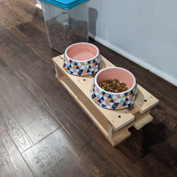
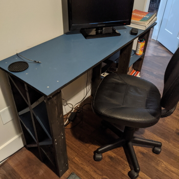
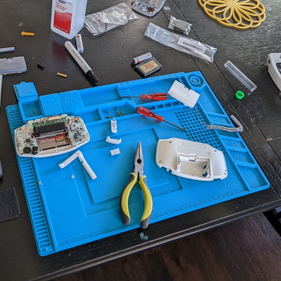

About
My name is Seth A. Taft, and I am an Academic Advisor for first-year Engineering students at Virginia Commonwealth University. I take an authentic and practical interpersonal approach developed over years of experience as an educator. I also leverage creative technology and process development skills to ensure efficient and accurate processes, information, and communication.
I have degrees in Music Education from the University of Colorado Boulder (PhD) and Virginia Commonwealth University (MM, BM). I identify as an educator, musician, researcher, technology advocate, praxialist, retro game enthusiast, and maker.
Teach
Teaching is an important part of my professional life. One of the things I have loved about my career is the variety of subjects I have been able to teach, including student success, instrumental performance, conducting, and music education. The subject matter has important differences, but the connections I have made with students have been a consistently important part of helping young people find their paths.
Teaching also affords me the opportunity to refine my understanding of what I am teaching. I love when students ask questions to which I don't know the answers or derail my entire lesson plan to discuss a fringe case that doesn't fit neatly into the conceptual framework we're discussing. It's fun and interesting, and it makes me a better teacher and pratitioner of what I'm teaching.
Play
My primary instrument is the saxophone, especially the baritone and alto saxes. I don't get as much time to play as I would like, but that helps me enjoy all the more when I do get to! Although most of my playing happens in traditional Western art music idioms and their derivatives, I enjoy playing pop tunes, especially well-written children's music, and can be heard playing in some unexpected places.
I also enjoy playing most other traditional band instruments, especially low brass and percussion. I also have a deep-seated love of obscure folk instruments, including the Chinese
erhu and Irish bodhrán, which I have unfortunately not yet found the time to learn to play well.
Research
During a period of my career, research and other academic writing were some of the main ways that I stayed connected with the broader music education community. That connection takes place in several forms, including collaborations with peers, reading and discussing the writings of others, and adding my own discoveries and ideas into the compendium of music education knowledge.
I have collaborated with others in research on music teacher evaluation and job fit. I have also written with a colleague about the use of APA 7 in music bibliography courses.
On my own, I have studied music teacher migration experiences, preservice teacher motivation in instrument techniques classes, and music teacher role stress (Podcast: Part 1|Part 2). I have also written about optimism in music study and composition in ensemble classrooms.
For quantitative analysis, I am currently using JASP. JASP is free, powerful, and user-friendly, and I highly recommend it.
Code
Educators use all kinds of tools to solve everyday pedagogical and adminstrative problems. For me, coding in web development languages (HTML, CSS, and JavaScript) is one of those tools. I've developed web-based solutions for degree planning, advising notetaking, qualitative analysis, blind auditions, and more. I also made this website and my own take on WORDLE-based word games.
Probably the most ambitious thing I ever built was Optimal, a platform for ensemble literature selection. It stored records of various aspects of difficulty of a piece, and any user could create one of those records. You could search through all the pieces that had been logged and get an average opinion (and plenty of comments) about the difficulty of that piece. It is no longer available, but it's still important to me as a milestone in my journey of developing tools to help me and others do our jobs better.
Make
I belive in containing one's professional life, having hobbies, and learning new things. When I'm not serving students, I enjoy working with my hands and creating things. Narratives surrounding creativity—especially self-narratives of people who don't think they are creative—seem to present creativity as an abstract or mysterious quality derived more often from a muse than a mind. I think that's backwards; as important as ingenuity is, it all starts with the act of creating, even re-creating. With years of experience as a musician and educator, I also think it's good to have something not ostensibly related to my job so that I can be new at something and keep a beginner's perspective.




Contact
The best method for contacting me is my personal email, taftsa@gmail.com.
I'm not very active on social media, but you can find me on Facebook.
You can also find my adorable dog Toby on Instagram.